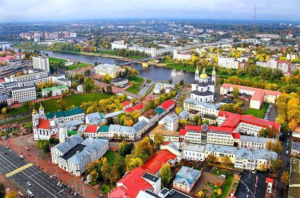

ИзначальноБрест развивался не как туристический, а как торговый город. Но именно это позволило ему обзавестись деревянным замком, а в дальнейшем каменными постройками, которые сохранились до сих пор. Символом Бреста стала знаменитая Брестская крепость. Построили ее в 19 столетии, этому сооружению пришлось пережить Вторую мировую войну. Частично крепость оказалась разрушена, но после войны ее стали подвергать реставрации и восстановлению. В Брестской крепости можно посетить Музей обороны Брест известен как город религиозных памятников. Доказательством тому является церковь Воздвижения Святого Креста, построенная в классическом стиле. Белоснежный фасад делает ее особенно красивой. Невероятно красив и Троицкий костел, построенный в 16 столетии.
Туристы, посещающие Витебск , любят любоваться церковью Святого Александра Невского. Постройке насчитывается менее 100 лет, хотя выглядит она эффектно — построенная из дерева, она стала самым популярным туристическим объектом за последние годы в городе. Среди исторических улиц во всей Беларуси выделяется улица Суворова, что находится в Витебске. Ее украшают старинные дома и храм Воскресения Христова. Красивое место привлекает престижными ресторанами и кафе, а также разнообразными магазинами. Исторический центр порадует зданием ратуши, построенной в конце 18 столетия. Постройка в стиле барокко завораживает, в ее стенах находится известный краеведческий музей, собравший экспонаты 13–19 столетий. Ярким образцом неороманского стиля стала церковь Святой Варвары. Здание церкви прекрасно сохранилось и пережило даже революцию. Витебск предлагает досуг для всей семьи, поэтому туристы с детьми могут легко найти себе занятие. Например, можно прогуляться по витебскому зоопарку. Это комфортное и уютное место, которому можно посвятить полдня. Другой популярный развлекательный центр называется Рио. Здесь царит атмосфера веселья, работают аниматоры, созданы все условия для активного времяпрепровождения. По достоинству оценить красоту Витебска смогут все любители военного дела. Парк культуры и отдыха Советской Армии, располагающийся близ Западной Двины, стал отличным местом для отдыха. Продолжить тематическую экскурсию можно в Парке Победителей, в котором находятся памятники Второй мировой войны.

Когда именно появился Гомель, никто не может сказать точно. Это действительно красивый город, расположенный в месте, где сливаются реки Ипуть и Сож. Прославился Гомель благодаря религиозной архитектуре. Находящийся здесь Никольский монастырь часто можно увидеть в рекомендациях от различных туристических агентств. На данный момент это единственный мужской монастырь в городе. Внутри сохранились религиозные реликвии, сейчас в монастыре проводятся воскресные занятия. Его библиотека насчитывает немало книг, имеющих большую историческую ценность. В охотничьем домике, некогда принадлежавшем Румянцеву, есть целая коллекция старинной мебели, являющейся настоящим антиквариатом.

| Страна | Город | Население | Экономика | Популярная достопримечательность |
|
| ВРП | Доля в ВВП | ||||
| Беларусь | Брест | 342 461 | 13,9 млрд. рублей | 14,4% | Брестская крепость |
| Витебск | 359 148 | 6,5 млрд. рублей | 7,5% | Свято-Успенский кафедральный собор | |
| Гомель | 501 802 | 22,5 млрд. рублей | 22,1% | Дворец Румянцевых и Паскевичей | |
Скульптура "Мужество" является главным монументом мемориала "Брестская крепость-герой", была сооружена под руководством московского скульптора Кибальникова в 1971 году. Первоначально архитектор планировал сделать монумент не более 7 метров, но для мемориального комплекса Бреста это оказалось мало, поэтому было решено увеличить размеры до 36 метров. Внешний вид действительно мужественен, хотя недавно компания CNN выставила его в негативном свете, вызвала гнев многих людей...
Эта огромная по своим размерам скульптура представляет собой ничто иное, как бетонную оболочку, закрепленную на металлическом каркасе. Внутри скульптура полая. Причем оболочка скульптуры отливалась из бетона горизонтальными рядами по мере установки опалубки из гипсовых форм, которые отливались на Брестском заводе железобетонных изделий. Первоначально была отлита гипсовая форма монумента в масштабе 1:7, и только потом с нее снимались опечатки.
Витебская ратуша — достопримечательность, которую трудно обойти стороной, гуляя по городу. Она находится на улице Ленина, 36 — и сразу бросается в глаза. Красивая историческая постройка стала визитной карточкой города, его важной культурной и исторической достопримечательностью.
В подвале ратуши проводятся археологические раскопки — и однажды там обнаружили остатки старого здания. Тщательно изучив все, что смогли найти, археологи пришли к выводу, что это элементы самого первого строения — того самого, которое отражено на чертежах 1664 года. Городская ратуша Витебска — это ценное историческое и культурное здание, построенное в стилях барокко и классицизм. У него богатая и интересная история. А сегодня внутри ратуши находится городской краеведческий музей — так что изучить постройку можно как снаружи, так и изнутри. Это настоящая гордость не только жителей Витебска, но и всей Беларуси.